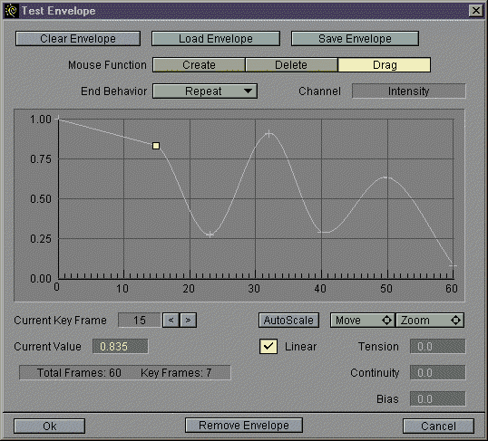

The
Lightwave3D Envelope Access PluginThe
Lightwave3D Envelope Access Plugin
The
Lightwave3D Envelope Access PluginThe
Lightwave3D Envelope Access Plugin
This Global Class plugin provides the programmer with an animation envelope handler for use in their own Lightwave3D plugins. An envelope handler has functions for manipulating multi-channel spline envelopes, including disk I/O and an basic envelope editor interface:

When this plugin is activated by calling Lightwave3D's global function with the string "EnvelopeHandler", it returns an EnvelopeHandler structure with the following elements:
typedef struct st_EnvelopeHandler {
int api_version;
Envelope *(*create)(LWError *);
void (*destroy)(Envelope *);
LWError (*copy)(Envelope *from,Envelope *to);
LWError (*load)(Envelope *env,char *filename);
LWError (*save)(Envelope *env, char *filename);
void (*evaluate)(Envelope *, LWTime, ChanVec);
int (*Interface)(Envelope *, ehInterfaceData *dat);
LWError (*LWLoad)(Envelope *env, const LWLoadState *);
LWError (*LWSave)(Envelope *env, const LWSaveState *);
Keyframe *(*createKey)(int step,ChanVec cv,int chans);
void (*putKey)(Envelope *env,Keyframe *key);
Keyframe *(*getKey)(Envelope *env, int step);
void (*destroyKey)(Keyframe *key);
} EnvelopeHandler;
typedef struct {
LWPanelFuncs *pfunc;
const char *title;
channelDescription chDesc[MAX_CHANNELS];
} ehInterfaceData;
typedef struct {
char *chname;
float min, max;
} channelDescription;
The Envelope stucture definition, and many other essential tidbits are in the header file lwenvlp.h. A minimal example plugin which creates and edits an envelope is in the file EnView.c. These files are included in the archives below.